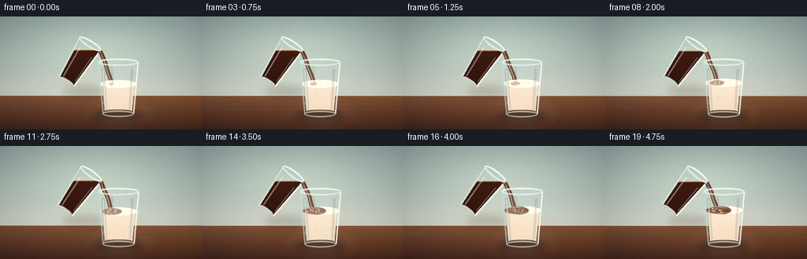
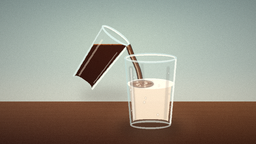
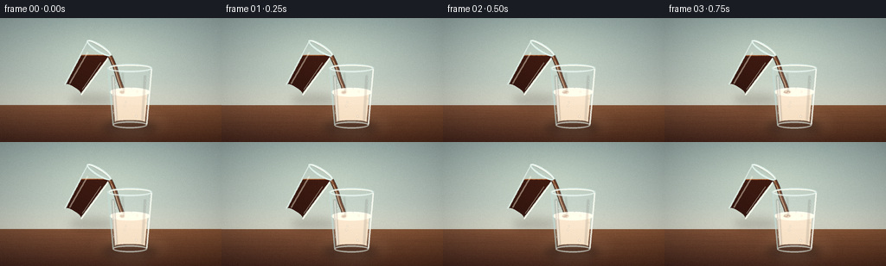
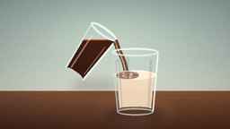
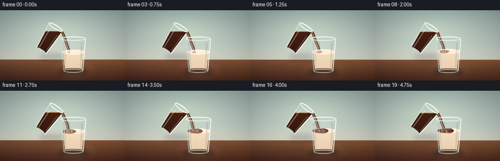

CODING AGENTS AS PIXEL WORLD MODELS
traex/DeepSeek-V4.1-Flash · material_0021
点击播放 · 原生 RGB 像素
逐轮保存的候选
回放视频、检查图与代码变化。
每份候选均可单独播放。实际图片检查记录在下方工具轨迹中。
候选 01播放与检查图
点击播放 · 原生 RGB 像素

展开代码变化
--- 上一保存版本
+++ 本次保存版本
@@ -0,0 +1,482 @@
+from pathlib import Path
+import math
+
+import numpy as np
+from PIL import Image, ImageChops, ImageDraw, ImageFilter
+
+import artifact_io
+
+
+W, H = 256, 144
+SS = 4
+RW, RH = W * SS, H * SS
+TAU = math.tau
+
+
+def sc(value):
+ return int(round(value * SS))
+
+
+def box(x0, y0, x1, y1):
+ return (sc(x0), sc(y0), sc(x1), sc(y1))
+
+
+def rgba(color):
+ if len(color) == 3:
+ return (*color, 255)
+ return color
+
+
+def transparent():
+ return Image.new("RGBA", (RW, RH), (0, 0, 0, 0))
+
+
+def smoothstep(x):
+ x = np.clip(x, 0.0, 1.0)
+ return x * x * (3.0 - 2.0 * x)
+
+
+def body_points(cx, top, bottom, half_top, half_bottom, round_base=True):
+ pts = []
+ for y in np.linspace(top, bottom - 2.0, 28):
+ u = (y - top) / (bottom - top)
+ hw = half_top + (half_bottom - half_top) * u
+ pts.append((cx - hw, y))
+ if round_base:
+ for a in np.linspace(math.pi, TAU, 24):
+ pts.append(
+ (
+ cx + half_bottom * math.cos(a),
+ bottom - 2.0 + 2.0 * math.sin(a),
+ )
+ )
+ else:
+ pts.append((cx - half_bottom, bottom))
+ pts.append((cx + half_bottom, bottom))
+ for y in np.linspace(bottom - 2.0, top, 28):
+ u = (y - top) / (bottom - top)
+ hw = half_top + (half_bottom - half_top) * u
+ pts.append((cx + hw, y))
+ return [(sc(x), sc(y)) for x, y in pts]
+
+
+def ellipse_mask(rx, ry):
+ yy, xx = np.mgrid[0:ry * 2, 0:rx * 2]
+ return Image.fromarray(
+ (((xx - rx + 0.5) / rx) ** 2 + ((yy - ry + 0.5) / ry) ** 2 <= 1.0).astype(np.uint8) * 255,
+ "L",
+ )
+
+
+def paste_ellipse(canvas, cx, cy, rx, ry, fill, outline=None, width=1):
+ draw = ImageDraw.Draw(canvas)
+ draw.ellipse(box(cx - rx, cy - ry, cx + rx, cy + ry), fill=fill, outline=outline, width=sc(width))
+
+
+def vertical_gradient(top_color, bottom_color, height, width=RW):
+ t = np.linspace(0.0, 1.0, height)[:, None, None]
+ top = np.asarray(top_color, dtype=np.float32)[None, None, :]
+ bottom = np.asarray(bottom_color, dtype=np.float32)[None, None, :]
+ row = top * (1.0 - t) + bottom * t
+ return np.repeat(row, width, axis=1)
+
+
+def make_background(rng):
+ yy = np.linspace(0.0, 1.0, RH)[:, None]
+ xx = np.linspace(0.0, 1.0, RW)[None, :]
+ horizon = 101.0 / H
+ wall_u = np.clip(yy / horizon, 0.0, 1.0) + 0.0 * xx
+
+ wall_top = np.array([151, 174, 173], dtype=np.float32)
+ wall_mid = np.array([194, 207, 199], dtype=np.float32)
+ wall_low = np.array([218, 216, 201], dtype=np.float32)
+ wall = wall_top * (1.0 - wall_u[..., None]) + wall_mid * wall_u[..., None]
+ wall = wall * (1.0 - smoothstep((wall_u - 0.62) / 0.38)[..., None] * 0.42) + wall_low * (
+ smoothstep((wall_u - 0.62) / 0.38)[..., None] * 0.42
+ )
+
+ glow = np.exp(-(((xx - 0.47) / 0.31) ** 2 + ((yy - 0.27) / 0.26) ** 2))
+ wall += glow[..., None] * np.array([18.0, 17.0, 10.0], dtype=np.float32)
+
+ table_u = np.clip((yy - horizon) / (1.0 - horizon), 0.0, 1.0) + 0.0 * xx
+ table_top = np.array([132, 88, 61], dtype=np.float32)
+ table_bottom = np.array([75, 45, 34], dtype=np.float32)
+ table = table_top * (1.0 - table_u[..., None]) + table_bottom * table_u[..., None]
+ table += (xx - 0.5)[..., None] * np.array([9.0, 4.0, -2.0], dtype=np.float32)
+
+ mask = (yy >= horizon).astype(np.float32) + 0.0 * xx
+ rgb = wall * (1.0 - mask[..., None]) + table * mask[..., None]
+
+ grain = rng.normal(0.0, 1.0, (RH // 2, RW // 2)).astype(np.float32)
+ grain = np.asarray(
+ Image.fromarray(((grain * 20.0) + 128.0).clip(0, 255).astype(np.uint8), "L").resize(
+ (RW, RH), Image.Resampling.BICUBIC
+ ),
+ dtype=np.float32,
+ )
+ grain = (grain - 128.0) * 0.12
+ rgb += grain[..., None]
+
+ vignette = np.clip(1.0 - 0.20 * (((xx - 0.5) / 0.62) ** 2 + ((yy - 0.47) / 0.74) ** 2), 0.74, 1.0)
+ rgb *= vignette[..., None]
+ return Image.fromarray(np.clip(rgb, 0, 255).astype(np.uint8), "RGB").convert("RGBA")
+
+
+def draw_table_details(base, rng):
+ layer = transparent()
+ draw = ImageDraw.Draw(layer)
+ for _ in range(34):
+ y0 = rng.uniform(103.0, 143.0)
+ phase = rng.uniform(0.0, TAU)
+ amp = rng.uniform(0.25, 1.2)
+ freq = rng.uniform(0.018, 0.055)
+ points = []
+ for x in np.linspace(-10.0, 266.0, 90):
+ y = y0 + amp * math.sin(freq * x + phase) + 0.35 * math.sin(0.11 * x - phase)
+ points.append((sc(x), sc(y)))
+ alpha = int(rng.uniform(8, 23))
+ draw.line(points, fill=(57, 28, 21, alpha), width=max(1, sc(rng.uniform(0.35, 0.9))))
+
+ glow = transparent()
+ gd = ImageDraw.Draw(glow)
+ gd.ellipse(box(105, 101, 200, 143), fill=(255, 224, 177, 17))
+ glow = glow.filter(ImageFilter.GaussianBlur(sc(8)))
+ base.alpha_composite(glow)
+ base.alpha_composite(layer)
+
+
+def draw_shadows(base):
+ shadow = transparent()
+ draw = ImageDraw.Draw(shadow)
+ draw.ellipse(box(117, 119, 181, 135), fill=(31, 24, 23, 105))
+ draw.ellipse(box(134, 123, 168, 133), fill=(21, 17, 18, 72))
+ draw.ellipse(box(80, 88, 132, 102), fill=(40, 26, 23, 45))
+ shadow = shadow.filter(ImageFilter.GaussianBlur(sc(4.8)))
+ base.alpha_composite(shadow)
+
+ reflection = transparent()
+ rd = ImageDraw.Draw(reflection)
+ rd.rounded_rectangle(box(126, 123, 174, 141), radius=sc(8), fill=(240, 220, 195, 13))
+ reflection = reflection.filter(ImageFilter.GaussianBlur(sc(6)))
+ base.alpha_composite(reflection)
+
+
+def coffee_glass_sprite(angle_deg, world_level):
+ lw, lh = sc(100), sc(110)
+ sprite_box = (lw, lh)
+ local = Image.new("RGBA", (lw, lh), (0, 0, 0, 0))
+ cx, top, bottom = 50.0, 24.0, 84.0
+ half_top, half_bottom = 16.5, 12.0
+
+ outer = body_points(cx, top, bottom, half_top, half_bottom)
+ inner = body_points(cx, top + 2.0, bottom - 2.5, half_top - 2.4, half_bottom - 2.2)
+ inner_mask = Image.new("L", (lw, lh), 0)
+ ImageDraw.Draw(inner_mask).polygon(inner, fill=255)
+
+ glass = Image.new("RGBA", (lw, lh), (0, 0, 0, 0))
+ gd = ImageDraw.Draw(glass)
+ gd.polygon(outer, fill=(207, 227, 226, 32))
+
+ liquid = Image.new("RGBA", (lw, lh), (0, 0, 0, 0))
+ yy, xx = np.mgrid[0:lh, 0:lw]
+ lx = (xx + 0.5) / SS
+ ly = (yy + 0.5) / SS
+ a = math.radians(angle_deg)
+ dx = lx - cx
+ dy = ly - 55.0
+ world_y = 61.0 + math.sin(a) * dx + math.cos(a) * dy
+ fluid_mask = Image.fromarray(((world_y >= world_level) * 255).astype(np.uint8), "L")
+ fluid_mask = ImageChops.multiply(fluid_mask, inner_mask)
+
+ grad = vertical_gradient((67, 30, 19), (39, 18, 13), lh, lw)
+ grad_img = Image.fromarray(np.clip(grad, 0, 255).astype(np.uint8), "RGB").convert("RGBA")
+ grad_img.putalpha(248)
+ liquid = Image.composite(grad_img, liquid, fluid_mask)
+ glass.alpha_composite(liquid)
+
+ surface = Image.new("RGBA", sprite_box, (0, 0, 0, 0))
+ sd = ImageDraw.Draw(surface)
+ # A warm meniscus at the world-horizontal coffee level.
+ level_y_local = []
+ for lxx in np.linspace(cx - half_top, cx + half_top, 36):
+ ddx = lxx - cx
+ # Invert the rotation at the world liquid level.
+ ddy = (world_level - 61.0 - math.sin(a) * ddx) / math.cos(a)
+ level_y_local.append((sc(lxx), sc(55.0 + ddy)))
+ sd.line(level_y_local, fill=(190, 111, 59, 190), width=max(2, sc(1.1)), joint="curve")
+ surface = Image.composite(surface, Image.new("RGBA", sprite_box, (0, 0, 0, 0)), inner_mask)
+ glass.alpha_composite(surface)
+
+ rim = Image.new("RGBA", sprite_box, (0, 0, 0, 0))
+ rd = ImageDraw.Draw(rim)
+ rd.ellipse(box(cx - half_top, top - 4.4, cx + half_top, top + 4.4), outline=(213, 234, 231, 205), width=sc(2.1))
+ rd.arc(box(cx - half_top + 1.2, top - 3.2, cx + half_top - 1.2, top + 3.2), 190, 350, fill=(249, 252, 245, 195), width=sc(1.1))
+ glass.alpha_composite(rim)
+
+ edges = Image.new("RGBA", sprite_box, (0, 0, 0, 0))
+ ed = ImageDraw.Draw(edges)
+ left_pts, right_pts = [], []
+ for y in np.linspace(top + 1.0, bottom - 3.0, 28):
+ u = (y - top) / (bottom - top)
+ hw = (half_top - 1.0) + ((half_bottom - 1.0) - (half_top - 1.0)) * u
+ left_pts.append((sc(cx - hw), sc(y)))
+ right_pts.append((sc(cx + hw), sc(y)))
+ ed.line(left_pts, fill=(222, 240, 237, 170), width=sc(1.35), joint="curve")
+ ed.line(right_pts, fill=(242, 248, 239, 215), width=sc(1.55), joint="curve")
+ ed.line([(sc(cx - 8.5), sc(35)), (sc(cx - 7.0), sc(77))], fill=(255, 250, 231, 100), width=sc(1.8))
+ ed.line([(sc(cx + 10.5), sc(37)), (sc(cx + 9.0), sc(75))], fill=(245, 250, 239, 92), width=sc(1.0))
+ glass.alpha_composite(edges)
+
+ glass.alpha_composite(rim)
+ rotated = glass.rotate(-angle_deg, resample=Image.Resampling.BICUBIC, expand=True)
+ return rotated
+
+
+def paste_centered(base, sprite, cx, cy):
+ px = sc(cx) - sprite.width // 2
+ py = sc(cy) - sprite.height // 2
+ base.alpha_composite(sprite, (px, py))
+
+
+def stream_points(x0, y0, x1, y1, phase):
+ pts = []
+ count = 52
+ for i in range(count):
+ t = i / (count - 1)
+ bow = math.sin(math.pi * t) * (1.1 + 0.55 * math.sin(phase + 2.4 * math.pi * t))
+ x = x0 + (x1 - x0) * t + bow
+ y = y0 + (y1 - y0) * t + 0.45 * math.sin(math.pi * t)
+ pts.append((sc(x), sc(y)))
+ return pts
+
+
+def draw_stream(base, x0, y0, x1, y1, phase):
+ layer = transparent()
+ draw = ImageDraw.Draw(layer)
+ pts = stream_points(x0, y0, x1, y1, phase)
+ draw.line(pts, fill=(45, 23, 18, 244), width=sc(4.9), joint="curve")
+ draw.line(pts, fill=(100, 51, 28, 238), width=sc(3.4), joint="curve")
+ draw.line([(x - sc(0.65), y) for x, y in pts], fill=(183, 108, 56, 112), width=sc(1.1), joint="curve")
+ # Tiny detached bead near the lip gives the pour a light, gentle cadence.
+ bead_y = y0 + 3.0 + 1.2 * math.sin(phase)
+ paste_ellipse(layer, x0 + 1.0, bead_y, 1.15, 1.55, (120, 62, 31, 205))
+ layer = layer.filter(ImageFilter.GaussianBlur(sc(0.28)))
+ base.alpha_composite(layer)
+
+
+def draw_milk_glass(base, level, progress, phase):
+ cx, top, bottom = 150.0, 58.0, 126.0
+ half_top, half_bottom = 26.0, 20.0
+ outer = body_points(cx, top, bottom, half_top, half_bottom)
+ inner = body_points(cx, top + 3.2, bottom - 3.8, half_top - 3.4, half_bottom - 3.0)
+
+ glass = transparent()
+ draw = ImageDraw.Draw(glass)
+ draw.polygon(outer, fill=(202, 225, 224, 34))
+ draw.ellipse(box(cx - half_top, top - 5.0, cx + half_top, top + 5.0), fill=(214, 232, 230, 22))
+
+ inner_mask = Image.new("L", (RW, RH), 0)
+ ImageDraw.Draw(inner_mask).polygon(inner, fill=255)
+ liquid_region = Image.new("L", (RW, RH), 0)
+ ImageDraw.Draw(liquid_region).rectangle(box(0, level, W, H), fill=255)
+ liquid_mask = ImageChops.multiply(inner_mask, liquid_region)
+
+ milk_grad = vertical_gradient((255, 249, 235), (235, 216, 190), RH)
+ milk_img = Image.fromarray(np.clip(milk_grad, 0, 255).astype(np.uint8), "RGB").convert("RGBA")
+ milk_img.putalpha(250)
+
+ # Side-wall refraction and a creamier lower body.
+ x = np.linspace(0.0, 1.0, RW)[None, :]
+ edge = (np.abs((x - 0.5) / 0.5) ** 3.4) * 34.0
+ arr = np.asarray(milk_img).astype(np.float32)
+ arr[..., 0] -= edge * 0.40
+ arr[..., 1] -= edge * 0.15
+ arr[..., 2] -= edge * 0.04
+ milk_img = Image.fromarray(np.clip(arr, 0, 255).astype(np.uint8), "RGBA")
+ milk = Image.composite(milk_img, transparent(), liquid_mask)
+ glass.alpha_composite(milk)
+
+ # Milk meniscus.
+ surface = transparent()
+ sd = ImageDraw.Draw(surface)
+ sd.ellipse(box(cx - half_top + 3.0, level - 5.2, cx + half_top - 3.0, level + 5.0), fill=(255, 250, 235, 245))
+ sd.arc(box(cx - half_top + 2.6, level - 5.0, cx + half_top - 2.6, level + 4.9), 184, 356, fill=(255, 255, 247, 225), width=sc(1.0))
+ glass.alpha_composite(surface)
+
+ # Coffee bloom and cream marbling, clipped to the elliptical surface.
+ surface_mask = Image.new("L", (RW, RH), 0)
+ ImageDraw.Draw(surface_mask).ellipse(box(cx - half_top + 3.4, level - 4.8, cx + half_top - 3.4, level + 4.6), fill=255)
+ bloom = transparent()
+ bd = ImageDraw.Draw(bloom)
+ impact_x = 141.0 + 0.7 * math.sin(phase * 0.7)
+ spread = 3.0 + 15.5 * smoothstep(progress)
+ depth = 1.4 + 4.0 * smoothstep(progress)
+ bd.ellipse(box(impact_x - spread, level - depth, impact_x + spread, level + depth), fill=(72, 34, 22, int(75 + 145 * progress)))
+ bd.ellipse(box(impact_x - spread * 0.72, level - depth * 0.78, impact_x + spread * 0.72, level + depth * 0.72), fill=(90, 43, 25, int(70 + 145 * progress)))
+
+ # Spiral coffee arms carry color outward as the pour continues.
+ for arm in range(3):
+ pts = []
+ for i in range(36):
+ u = i / 35.0
+ theta = arm * TAU / 3.0 + 1.45 * u + 0.35 * math.sin(phase)
+ r = spread * (0.10 + 0.91 * u)
+ px = impact_x + r * math.cos(theta)
+ py = level + r * 0.29 * math.sin(theta)
+ pts.append((sc(px), sc(py)))
+ bd.line(pts, fill=(105, 52, 30, int(80 + 115 * progress)), width=max(1, sc(1.1 + 0.7 * progress)), joint="curve")
+
+ bloom = Image.composite(bloom, transparent(), surface_mask)
+ bloom = bloom.filter(ImageFilter.GaussianBlur(sc(0.45)))
+ glass.alpha_composite(bloom)
+
+ # Fine cream ribbons remain legible at the coffee edge.
+ ribbons = transparent()
+ rd = ImageDraw.Draw(ribbons)
+ for arm in range(4):
+ pts = []
+ for i in range(28):
+ u = i / 27.0
+ theta = arm * TAU / 4.0 - 1.2 * u + 0.25 * math.sin(phase + arm)
+ r = spread * (0.18 + 0.72 * u)
+ px = impact_x + r * math.cos(theta)
+ py = level + r * 0.27 * math.sin(theta)
+ pts.append((sc(px), sc(py)))
+ rd.line(pts, fill=(250, 232, 201, int(45 + 90 * progress)), width=max(1, sc(0.55)), joint="curve")
+ ribbons = Image.composite(ribbons, transparent(), surface_mask)
+ glass.alpha_composite(ribbons)
+
+ # Ripples and a few tiny milk bubbles at the impact point.
+ contact = transparent()
+ cd = ImageDraw.Draw(contact)
+ ripple_r = 4.0 + 13.0 * progress
+ cd.ellipse(box(impact_x - ripple_r, level - ripple_r * 0.25, impact_x + ripple_r, level + ripple_r * 0.25), outline=(255, 239, 210, 80), width=max(1, sc(0.7)))
+ for j in range(8):
+ theta = phase + j * 2.399
+ rr = 3.0 + (j % 4) * 2.2
+ bx = impact_x + rr * math.cos(theta)
+ by = level + rr * 0.25 * math.sin(theta)
+ paste_ellipse(contact, bx, by, 0.7 + (j % 2) * 0.35, 0.55 + (j % 2) * 0.25, (255, 248, 228, 145))
+ contact = Image.composite(contact, transparent(), surface_mask)
+ glass.alpha_composite(contact)
+
+ # Thick glass rim and base.
+ rim = transparent()
+ rd = ImageDraw.Draw(rim)
+ rd.ellipse(box(cx - half_top, top - 5.1, cx + half_top, top + 5.1), outline=(205, 228, 227, 205), width=sc(2.3))
+ rd.arc(box(cx - half_top + 1.5, top - 3.8, cx + half_top - 1.5, top + 3.8), 188, 352, fill=(251, 252, 242, 222), width=sc(1.3))
+ rd.arc(box(cx - half_top + 1.0, top - 4.2, cx + half_top - 1.0, top + 4.2), 8, 172, fill=(241, 250, 246, 170), width=sc(1.0))
+ rd.ellipse(box(cx - half_bottom, bottom - 6.2, cx + half_bottom, bottom + 2.1), outline=(220, 235, 230, 150), width=sc(1.7))
+ glass.alpha_composite(rim)
+
+ edges = transparent()
+ ed = ImageDraw.Draw(edges)
+ left_pts, right_pts = [], []
+ for y in np.linspace(top + 1.0, bottom - 3.0, 40):
+ u = (y - top) / (bottom - top)
+ hw = (half_top - 0.8) + ((half_bottom - 0.7) - (half_top - 0.8)) * u
+ left_pts.append((sc(cx - hw), sc(y)))
+ right_pts.append((sc(cx + hw), sc(y)))
+ ed.line(left_pts, fill=(185, 215, 213, 150), width=sc(1.45), joint="curve")
+ ed.line(right_pts, fill=(243, 249, 241, 210), width=sc(1.8), joint="curve")
+
+ highlight = transparent()
+ hd = ImageDraw.Draw(highlight)
+ hd.line([(sc(cx - 19.5), sc(67)), (sc(cx - 16.2), sc(119))], fill=(255, 255, 248, 155), width=sc(2.4))
+ hd.line([(sc(cx + 17.6), sc(67)), (sc(cx + 14.6), sc(118))], fill=(255, 254, 243, 115), width=sc(1.25))
+ hd.line([(sc(cx - 8.5), sc(64)), (sc(cx - 7.2), sc(84))], fill=(255, 255, 250, 95), width=sc(1.0))
+ highlight = highlight.filter(ImageFilter.GaussianBlur(sc(0.7)))
+ edges.alpha_composite(highlight)
+ glass.alpha_composite(edges)
+
+ # Sparse condensation beads.
+ drops = transparent()
+ dd = ImageDraw.Draw(drops)
+ for j in range(11):
+ theta = j * 2.41
+ dx = cx + (18.0 + 4.0 * math.sin(j * 1.7)) * math.cos(theta)
+ dy = 73.0 + (j * 4.1) % 44
+ rr = 0.45 + 0.25 * ((j + 1) % 3)
+ dd.ellipse(box(dx - rr, dy - rr * 1.4, dx + rr, dy + rr * 1.4), fill=(245, 255, 250, 80))
+ dd.ellipse(box(dx - rr * 0.3, dy - rr * 0.8, dx + rr * 0.2, dy - rr * 0.1), fill=(255, 255, 255, 125))
+ drops = drops.filter(ImageFilter.GaussianBlur(sc(0.25)))
+ glass.alpha_composite(drops)
+
+ base.alpha_composite(glass)
+
+
+def draw_steam(base, phase, alpha):
+ layer = transparent()
+ draw = ImageDraw.Draw(layer)
+ for strand in range(2):
+ pts = []
+ for i in range(34):
+ u = i / 33.0
+ x = 101.0 + strand * 10.0 + 2.4 * math.sin(6.2 * u + phase + strand * 1.7) * u
+ y = 32.0 - 27.0 * u
+ pts.append((sc(x), sc(y)))
+ draw.line(pts, fill=(245, 244, 229, alpha), width=sc(1.05), joint="curve")
+ layer = layer.filter(ImageFilter.GaussianBlur(sc(1.4)))
+ base.alpha_composite(layer)
+
+
+def camera_zoom(image, amount):
+ if amount <= 1e-5:
+ return image
+ cw, ch = int(RW / (1.0 + amount)), int(RH / (1.0 + amount))
+ left, top = (RW - cw) // 2, (RH - ch) // 2
+ return image.crop((left, top, left + cw, top + ch)).resize((RW, RH), Image.Resampling.LANCZOS)
+
+
+def color_grade(image, rng, frame_index):
+ arr = np.asarray(image.convert("RGB"), dtype=np.float32) / 255.0
+ arr = np.clip((arr - 0.5) * 1.045 + 0.5, 0.0, 1.0)
+ arr[..., 0] = np.clip(arr[..., 0] * 1.018 + 0.006, 0.0, 1.0)
+ arr[..., 1] = np.clip(arr[..., 1] * 1.002 + 0.002, 0.0, 1.0)
+ arr[..., 2] = np.clip(arr[..., 2] * 0.992, 0.0, 1.0)
+ noise = rng.normal(0.0, 0.0032, (H, W, 1)).astype(np.float32)
+ arr = np.clip(arr + noise, 0.0, 1.0)
+ return Image.fromarray((arr * 255.0 + 0.5).astype(np.uint8), "RGB")
+
+
+def render_frame(index, total, rng):
+ t = index / (total - 1)
+ eased = float(smoothstep(t))
+ phase = TAU * t
+ base = make_background(rng)
+ draw_table_details(base, rng)
+ draw_shadows(base)
+
+ draw_steam(base, phase, 12 if index < 14 else 9)
+
+ angle = 32.0 + 6.0 * eased + 0.35 * math.sin(phase)
+ a = math.radians(angle)
+ cup_cx, cup_cy = 98.0, 61.0
+ spout_dx, spout_dy = 15.4, -30.0
+ spout_x = cup_cx + math.cos(a) * spout_dx - math.sin(a) * spout_dy
+ spout_y = cup_cy + math.sin(a) * spout_dx + math.cos(a) * spout_dy
+ coffee_level = spout_y - 0.9
+
+ cup = coffee_glass_sprite(angle, coffee_level)
+ paste_centered(base, cup, cup_cx, cup_cy)
+
+ milk_level = 86.0 - 4.5 * eased
+ stream_x = 141.8 + 0.65 * math.sin(phase + 0.4)
+ stream_y = milk_level + 0.5
+ draw_stream(base, spout_x, spout_y + 0.2, stream_x, stream_y, phase)
+ draw_milk_glass(base, milk_level, t, phase)
+
+ zoomed = camera_zoom(base, 0.022 * eased)
+ final = zoomed.convert("RGB").resize((W, H), Image.Resampling.LANCZOS)
+ return np.asarray(color_grade(final, rng, index), dtype=np.uint8)
+
+
+def main():
+ rng = np.random.default_rng(2047)
+ frames = [render_frame(i, 20, rng) for i in range(20)]
+ artifact_io.save(np.asarray(frames, dtype=np.uint8), Path(__file__).resolve().parent)
+ print("saved 20 frames at 256x144")
+
+
+if __name__ == "__main__":
+ main()
候选 02播放与检查图
点击播放 · 原生 RGB 像素

展开代码变化
--- 上一保存版本
+++ 本次保存版本
@@ -166,7 +166,7 @@
sprite_box = (lw, lh)
local = Image.new("RGBA", (lw, lh), (0, 0, 0, 0))
cx, top, bottom = 50.0, 24.0, 84.0
- half_top, half_bottom = 16.5, 12.0
+ half_top, half_bottom = 17.2, 12.5
outer = body_points(cx, top, bottom, half_top, half_bottom)
inner = body_points(cx, top + 2.0, bottom - 2.5, half_top - 2.4, half_bottom - 2.2)
@@ -188,7 +188,7 @@
fluid_mask = Image.fromarray(((world_y >= world_level) * 255).astype(np.uint8), "L")
fluid_mask = ImageChops.multiply(fluid_mask, inner_mask)
- grad = vertical_gradient((67, 30, 19), (39, 18, 13), lh, lw)
+ grad = vertical_gradient((74, 36, 21), (43, 20, 14), lh, lw)
grad_img = Image.fromarray(np.clip(grad, 0, 255).astype(np.uint8), "RGB").convert("RGBA")
grad_img.putalpha(248)
liquid = Image.composite(grad_img, liquid, fluid_mask)
@@ -203,14 +203,15 @@
# Invert the rotation at the world liquid level.
ddy = (world_level - 61.0 - math.sin(a) * ddx) / math.cos(a)
level_y_local.append((sc(lxx), sc(55.0 + ddy)))
- sd.line(level_y_local, fill=(190, 111, 59, 190), width=max(2, sc(1.1)), joint="curve")
+ sd.line(level_y_local, fill=(205, 128, 67, 215), width=max(2, sc(1.2)), joint="curve")
surface = Image.composite(surface, Image.new("RGBA", sprite_box, (0, 0, 0, 0)), inner_mask)
glass.alpha_composite(surface)
rim = Image.new("RGBA", sprite_box, (0, 0, 0, 0))
rd = ImageDraw.Draw(rim)
- rd.ellipse(box(cx - half_top, top - 4.4, cx + half_top, top + 4.4), outline=(213, 234, 231, 205), width=sc(2.1))
+ rd.ellipse(box(cx - half_top, top - 4.8, cx + half_top, top + 4.8), outline=(218, 238, 234, 225), width=sc(2.3))
rd.arc(box(cx - half_top + 1.2, top - 3.2, cx + half_top - 1.2, top + 3.2), 190, 350, fill=(249, 252, 245, 195), width=sc(1.1))
+ rd.arc(box(cx + half_top - 4.0, top - 0.5, cx + half_top + 3.2, top + 5.6), 285, 20, fill=(251, 249, 236, 235), width=sc(1.4))
glass.alpha_composite(rim)
edges = Image.new("RGBA", sprite_box, (0, 0, 0, 0))
@@ -254,9 +255,9 @@
layer = transparent()
draw = ImageDraw.Draw(layer)
pts = stream_points(x0, y0, x1, y1, phase)
- draw.line(pts, fill=(45, 23, 18, 244), width=sc(4.9), joint="curve")
- draw.line(pts, fill=(100, 51, 28, 238), width=sc(3.4), joint="curve")
- draw.line([(x - sc(0.65), y) for x, y in pts], fill=(183, 108, 56, 112), width=sc(1.1), joint="curve")
+ draw.line(pts, fill=(43, 21, 16, 246), width=sc(5.2), joint="curve")
+ draw.line(pts, fill=(101, 50, 27, 242), width=sc(3.6), joint="curve")
+ draw.line([(x - sc(0.65), y) for x, y in pts], fill=(196, 116, 59, 122), width=sc(1.15), joint="curve")
# Tiny detached bead near the lip gives the pour a light, gentle cadence.
bead_y = y0 + 3.0 + 1.2 * math.sin(phase)
paste_ellipse(layer, x0 + 1.0, bead_y, 1.15, 1.55, (120, 62, 31, 205))
@@ -281,17 +282,17 @@
ImageDraw.Draw(liquid_region).rectangle(box(0, level, W, H), fill=255)
liquid_mask = ImageChops.multiply(inner_mask, liquid_region)
- milk_grad = vertical_gradient((255, 249, 235), (235, 216, 190), RH)
+ milk_grad = vertical_gradient((245, 238, 220), (226, 202, 171), RH)
milk_img = Image.fromarray(np.clip(milk_grad, 0, 255).astype(np.uint8), "RGB").convert("RGBA")
milk_img.putalpha(250)
# Side-wall refraction and a creamier lower body.
x = np.linspace(0.0, 1.0, RW)[None, :]
- edge = (np.abs((x - 0.5) / 0.5) ** 3.4) * 34.0
+ edge = (np.abs((x - 0.5) / 0.5) ** 3.4) * 43.0
arr = np.asarray(milk_img).astype(np.float32)
- arr[..., 0] -= edge * 0.40
- arr[..., 1] -= edge * 0.15
- arr[..., 2] -= edge * 0.04
+ arr[..., 0] -= edge * 0.46
+ arr[..., 1] -= edge * 0.19
+ arr[..., 2] -= edge * 0.06
milk_img = Image.fromarray(np.clip(arr, 0, 255).astype(np.uint8), "RGBA")
milk = Image.composite(milk_img, transparent(), liquid_mask)
glass.alpha_composite(milk)
@@ -299,7 +300,7 @@
# Milk meniscus.
surface = transparent()
sd = ImageDraw.Draw(surface)
- sd.ellipse(box(cx - half_top + 3.0, level - 5.2, cx + half_top - 3.0, level + 5.0), fill=(255, 250, 235, 245))
+ sd.ellipse(box(cx - half_top + 3.0, level - 5.2, cx + half_top - 3.0, level + 5.0), fill=(245, 235, 213, 246))
sd.arc(box(cx - half_top + 2.6, level - 5.0, cx + half_top - 2.6, level + 4.9), 184, 356, fill=(255, 255, 247, 225), width=sc(1.0))
glass.alpha_composite(surface)
@@ -309,10 +310,10 @@
bloom = transparent()
bd = ImageDraw.Draw(bloom)
impact_x = 141.0 + 0.7 * math.sin(phase * 0.7)
- spread = 3.0 + 15.5 * smoothstep(progress)
- depth = 1.4 + 4.0 * smoothstep(progress)
- bd.ellipse(box(impact_x - spread, level - depth, impact_x + spread, level + depth), fill=(72, 34, 22, int(75 + 145 * progress)))
- bd.ellipse(box(impact_x - spread * 0.72, level - depth * 0.78, impact_x + spread * 0.72, level + depth * 0.72), fill=(90, 43, 25, int(70 + 145 * progress)))
+ spread = 3.0 + 17.0 * smoothstep(progress)
+ depth = 1.4 + 4.5 * smoothstep(progress)
+ bd.ellipse(box(impact_x - spread, level - depth, impact_x + spread, level + depth), fill=(65, 29, 19, int(85 + 160 * progress)))
+ bd.ellipse(box(impact_x - spread * 0.72, level - depth * 0.78, impact_x + spread * 0.72, level + depth * 0.72), fill=(83, 38, 23, int(80 + 160 * progress)))
# Spiral coffee arms carry color outward as the pour continues.
for arm in range(3):
@@ -324,7 +325,7 @@
px = impact_x + r * math.cos(theta)
py = level + r * 0.29 * math.sin(theta)
pts.append((sc(px), sc(py)))
- bd.line(pts, fill=(105, 52, 30, int(80 + 115 * progress)), width=max(1, sc(1.1 + 0.7 * progress)), joint="curve")
+ bd.line(pts, fill=(98, 45, 26, int(90 + 125 * progress)), width=max(1, sc(1.2 + 0.7 * progress)), joint="curve")
bloom = Image.composite(bloom, transparent(), surface_mask)
bloom = bloom.filter(ImageFilter.GaussianBlur(sc(0.45)))
候选 03播放与检查图

可观测工具轨迹
实际执行的命令与返回图片。
命令 1exit 0
/bin/bash -c "pwd && rg --files -g 'prompt.txt' -g 'GENERATION_RULES.md' -g 'task_spec.json' -g '"'!**/.git/**'"'"
命令 2exit 0
/bin/bash -c 'ls -la'
命令 3exit 0
/bin/bash -c 'cat prompt.txt'
命令 4exit 0
/bin/bash -c 'cat GENERATION_RULES.md'
命令 5exit 0
/bin/bash -c 'cat task_spec.json'
命令 6exit 0
/bin/bash -c "sed -n '1,260p' artifact_io.py"
命令 7exit 0
/bin/bash -c "find .tmp -maxdepth 2 -type f -printf '%p %s bytes\\n' | head -50"
命令 8exit 1
/bin/bash -c 'python generate.py'
命令 9exit 1
/bin/bash -c 'python generate.py'
命令 10exit 1
/bin/bash -c 'python generate.py'
命令 11exit 1
/bin/bash -c 'python generate.py'
命令 12exit 0
/bin/bash -c "nl -ba generate.py | sed -n '72,125p'"
命令 13exit 1
/bin/bash -c 'python generate.py'
命令 14exit 1
/bin/bash -c 'python generate.py'
命令 15exit 1
/bin/bash -c 'python generate.py'
命令 16exit 0
/bin/bash -c 'python generate.py'
命令 17exit 0
/bin/bash -c "python - <<'PY'
from PIL import Image
for name in ('frames/00.png','frames/10.png','frames/19.png'):
im=Image.open(name)
print(name, im.size, im.getbbox(), im.getextrema())
PY"命令 18exit 0
/bin/bash -c 'ls -lh pixels.npz index.html frames/00.png inspection.png transition_check.png'
命令 19exit 0
/bin/bash -c "nl -ba generate.py | sed -n '145,235p'"
命令 20exit 0
/bin/bash -c "nl -ba generate.py | sed -n '255,380p'"
命令 21exit 0
/bin/bash -c "nl -ba generate.py | sed -n '430,490p'"
命令 22exit 0
/bin/bash -c 'python generate.py'
命令 23exit 0
/bin/bash -c "python - <<'PY'
from pathlib import Path
import json, numpy as np
from PIL import Image
p=Path('.')
spec=json.loads((p/'task_spec.json').read_text())
z=np.load(p/'pixels.npz')
print('spec',spec)
print('pixels', z['pixels'].shape, z['pixels'].dtype)
files=sorted((p/'frames').glob('*.png'))
print('frames',len(files),Image.open(files[0]).size)
a=np.stack([np.asarray(Image.open(f)) for f in files]).astype(np.float32)
print('mean abs adjacent delta', float(np.abs(np.diff(a,axis=0)).mean()))
print('frame mean range', float(a.mean(axis=(1,2,3)).min()), float(a.mean(axis=(1,2,3)).max()))
print('all finite RGB', bool(np.isfinite(a).all()), 'value range', a.min(), a.max())
print('index bytes', (p/'index.html').stat().st_size)
PY"命令 24exit 0
/bin/bash -c 'git status --short && python -m py_compile generate.py artifact_io.py'
视觉工具实际返回图片 1

视觉工具实际返回图片 2

视觉工具实际返回图片 3

视觉工具实际返回图片 4

视觉工具实际返回图片 5

视觉工具实际返回图片 6

保存候选 3 份；完成命令 24 次；可验证图片返回 6 张。原始 API 响应与完整日志保留在本地。